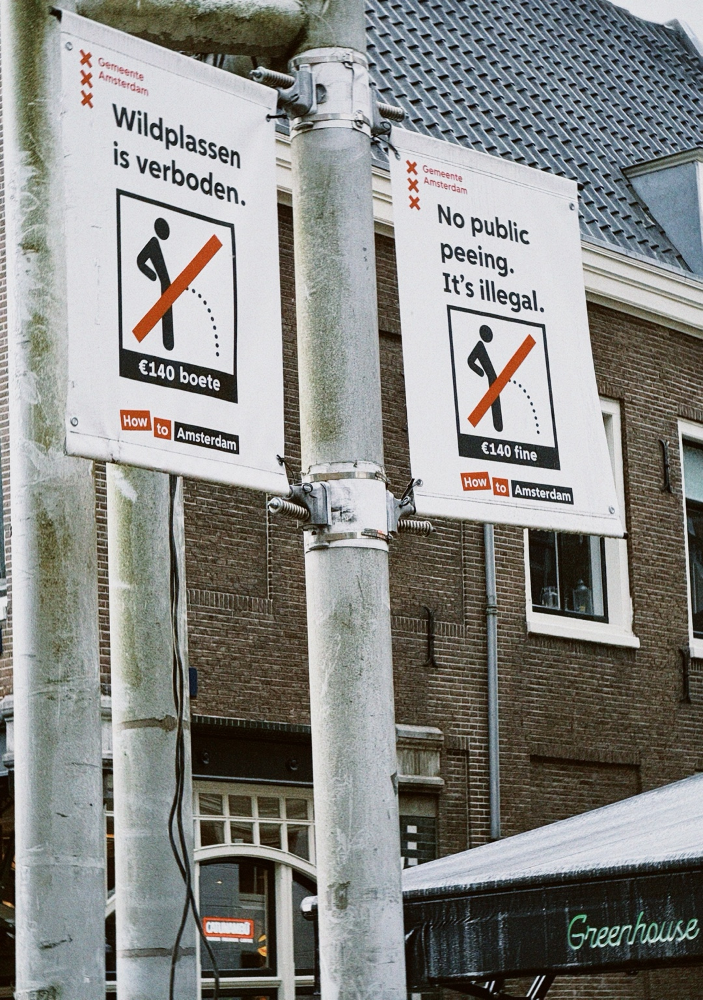

Amsterdam, 2024
Amsterdam municipal signs warning that public peeing is illegal, with a €140 fine, mounted on a street pole in Amsterdam, Netherlands.

Amsterdam municipal signs warning that public peeing is illegal, with a €140 fine, mounted on a street pole in Amsterdam, Netherlands.